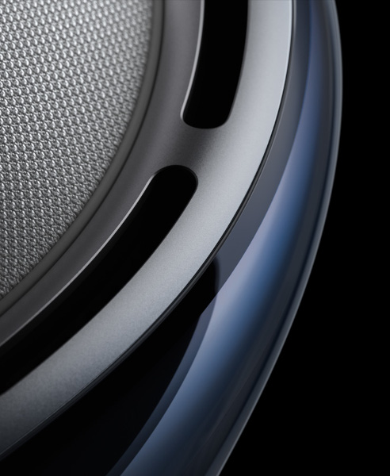
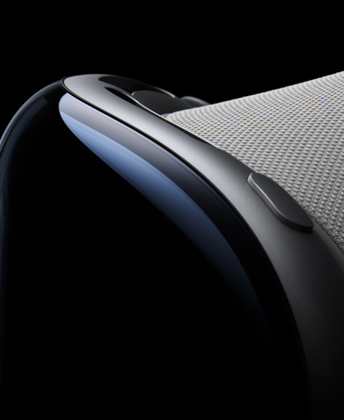

Welcome to the era of spatial computing
Technology
Innovation you can
see, hear, and feel.
Pushing boundaries from the inside out. Spatial experiences on Vision Pro are only possible through groundbreaking Apple technology. Displays the size of a postage stamp that deliver more pixels than a 4K TV to each eye. Incredible advances in Spatial Audio. A revolutionary dual‑chip design featuring custom Apple silicon. A sophisticated array of cameras and sensors. All the elements work together to create an unprecedented experience you have to see to believe.

